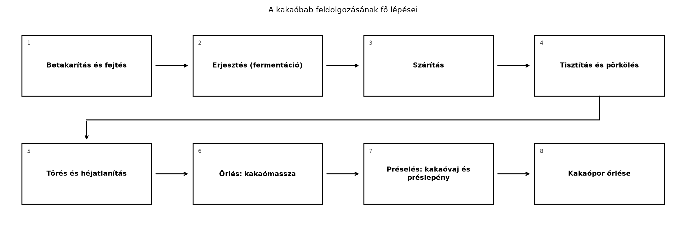
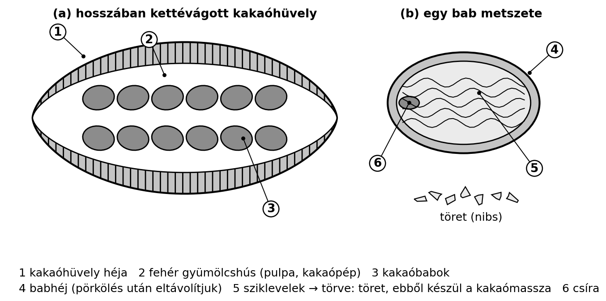

A kakaóbab feldolgozása tankönyvi alfejezetben kényes téma, mert a legtöbb lépés a trópusi termőhelyen vagy ipari üzemben zajlik. A cukrász számára mégis azért fontos, mert a műhelyben használt kakaópor, kakaóvaj és csokoládé tulajdonságai – szín, pH, zsírtartalom, kristályosodás – mind itt dőlnek el. Motívum: „a reggeli kakaós linzer tésztája hol sötétbarna, hol fakó; az olvasztott csokoládé hol fényesen pattan, hol szürkén csíkos marad” – a válasz a kakaóbab feldolgozásában és a kakaóvaj kristályszerkezetében van.
Az alábbi ábra a feldolgozás fő lépéseit mutatja, táblázatokba foglalva tárgyaljuk a kakaóporfajtákat és a kakaóvaj kristálymódosulatait.

A cukrászüzemben három nagyon különböző „barna hozzávalóval” dolgozunk: a kakaóporral, a kakaóvajjal és a belőlük gyártott csokoládéval. Ha csak annyit tudunk, hogy „kakaó”, akkor nem értjük, miért savanykás egyes kakaópor, miért más a sütemény színe, ha holland kakaóport használunk, és miért kell a csokoládét temperálni. A kakaóbab feldolgozásának lépései magyarázzák ezeket a gyakorlati jelenségeket.
A kakaóbab a kakaófa (Theobroma cacao) termésében, a kakaóhüvelyben található mag. A mag körüli fehér, enyhén savanykás gyümölcshús (kakaópép) fontos szerepet kap az erjesztésben. A gyakorlatban három fő fajtacsoportot különböztetünk meg.
| Fajtacsoport | Előfordulás | Jellemzői |
|---|---|---|
| Forastero | Nyugat-Afrika, Délkelet-Ázsia, Brazília | Robusztus, termékeny, erősen keserű, alapízű |
| Criollo | Közép-Amerika, Venezuela | Ritka, finom aromájú, kevésbé termékeny, érzékenyebb |
| Trinitario | Trinidad, hibrid | A kettő közötti átmenet: jó termőképesség, finomabb aroma |
A fajtacsoport neve csak közelítő iránymutatás; a gyakorlatban keverékekből készül a legtöbb ipari kakaómassza (ellenőrizendő: aktuális származási és fajtamegnevezések a gyártói adatlapon).

Az ábra (a) része a hosszában kettévágott kakaóhüvelyt mutatja: a vastag héj (1) alatt fehér gyümölcshús (pulpa, 2) veszi körül a sorokban álló kakaóbabokat (3). A (b) rész egy bab metszete: a babhéjat (4) a pörkölés után eltávolítjuk, a gyűrött sziklevelek (5) törve adják a töretet, amelyből a kakaómassza készül; a bab egyik végén a csíra (6) van.
A betakarítás után a kakaóbabot a hüvelyből kifejtik, és halmokban, ládákban vagy kosarakban erjesztik. Az erjesztés során a kakaópépben élő élesztők és tejsav- és ecetsavbaktériumok cukrot bontanak, hőt termelnek, és az erjedés során keletkező savak, valamint a hőhatás elindítják a belső íz- és színanyagok kialakulását. Az erjesztés jellemzően 2–7 nap (ellenőrizendő: fajtánként és eljárásonként változik), a hőmérséklet átmenetileg 45–50 °C fölé is emelkedik (ellenőrizendő). A folyamat során a nyers, fanyar bab jellegzetes kakaóízt fejleszt.
Az erjesztés után a babot szárítják, jellemzően napon vagy mesterséges szárítóban, amíg a nedvességtartalom körülbelül 6–8 %-ra csökken (ellenőrizendő). A szárított bab szállítható és tárolható. A túl nedves bab penészesedhet, a túl száraz bab pedig törékeny, poros lesz.
A feldolgozó üzemben a szárított kakaóbabot tisztítják, majd pörkölik. A pörkölés során a kakaóbabban Maillard-reakció és karamellizáció zajlik; kialakulnak a jellegzetes pörkölt aromák, csökken a nyers, kellemetlen íz. A pörkölési hőmérséklet és idő a fajtától és a kívánt ízprofiltól függ: gyakran 110–160 °C, 10–45 perc (ellenőrizendő: gyártói adatok). A túl alacsony pörkölés nyers, keserű; a túl magas pörkölés égett, hamus ízt ad.
A pörkölt, lehűtött babot megtörik, és a héját elválasztják a belső, kemény kakaóbéltől (kakaócserepek, angolul nib). A kakaóhéj és a kakaócsíra eltávolítása után a kakaócserepeket őrlik. Az őrlés során a kakaóvaj a mechanikai hőtől megolvad, és a finom kakaószemcsékkel sűrű, folyékony, sötétbarna masszát képez.
Definíció. A kakaómassza (kakaólikőr vagy kakaópaszta) a pörkölt, héjatlanított kakaóbab őrlésével nyert termék, amely kakaóvajban szuszpendált kakaószárazanyagot tartalmaz. Hűtve megdermed, melegítve újra folyóssá válik.
A kakaómassza jellemzően 50–58 tömegszázalék kakaóvajat tartalmaz (ellenőrizendő: fajtától függ). A masszából hidraulikus préssel kakaóvajat préselnek ki. A visszamaradt, csökkentett zsírtartalmú, kemény préslepényt lehűtik, durvára törnek, majd finomra őrlik; ez a kakaópor.
Definíció. A kakaóvaj a kakaómassza préselésével kinyert zsiradék, amely szobahőmérsékleten kemény, törékeny; a kakaópor a kakaómassza kakaóvajtartalmának részleges eltávolítása után visszamaradt, őrölt préslepény.
A kakaópor zsírtartalma attól függ, hogy a préselés után mennyi kakaóvaj marad benne.
Jogszabály. Kakaópor: legalább 20% kakaóvaj; zsírszegény kakaópor: kevesebb mint 20%, de legalább 8% (szárazanyagra; ellenőrizendő: 2000/36/EK irányelv, Magyar Élelmiszerkönyv). Ilyen határok alatti terméket nem forgalmaznak kakaópor néven.
A gyakorlatban a következő kereskedelmi típusokat különböztetjük meg (a pontos határokat a termékszabályozás és a gyártói adatlap adja meg, ezért ellenőrizendő):
| Kakaópor-típus | Hozzávetőleges zsírtartalom (g/100 g) | Megjegyzés |
|---|---|---|
| Zsírszegény kakaópor | 8–20 (kereskedelmi típusok pl. 10–12) | Diétás, sűrítő célú felhasználás, italporok |
| Kakaópor | 20–22 | Általános cukrászati kakaópor |
| Magas zsírtartalmú | ≥ 22 | Zsírosabb, dúsabb íz, egyes bevonókhoz |
A kereskedelmi típusok zsírtartalma tájékoztató jellegű (ellenőrizendő: a 2000/36/EK és a Magyar Élelmiszerkönyv pontos összetételi előírásai). A zsírtartalom a termék jelölésén szerepel.
A kakaópor pH-ja is fontos technológiai tényező. A természetes, nem lúgozott kakaópor enyhén savas (pH jellemzően 5–6, ellenőrizendő), világosabb barna, kissé savanykás, gyümölcsös ízű. A lúgozás (alkalizálás) során a kakaómasszát vagy kakaóport lúgos anyaggal, hagyományosan kálium-karbonáttal kezelik. Ezt hívják holland eljárásnak.
A lúgozott kakaópor sötétebb, enyhébb, kevésbé savas (pH jellemzően 6,8–8,1, ellenőrizendő), és vízben jobban oldódik. Ezért italporokhoz és olyan süteményekhez kedvelt, ahol sötét színt és sima, kerek ízt akarunk. A csomagoláson a „lúgozott” vagy „holland” megnevezés, a gyártói adatlapon a pH is szerepelhet.
A kakaóvaj nem egyetlen zsiradék, hanem trigliceridek keveréke. Mivel a kakaóvaj molekulái többféle kristályrácsba rendeződhetnek, a kakaóvaj polimorf anyag. A gyakorlatban hat kristálymódosulatot különböztetünk meg, római számmal jelölve.
| Módosulat | Hozzávetőleges olvadáspont (°C) | Jellemzők |
|---|---|---|
| I (γ) | 17–18 | Lágy, morzsalékos, nem stabil |
| II (α) | 21–23 | Lágy, zsírosan fénylő |
| III (β′₂) | 25–26 | Törékeny, de nem stabil |
| IV (β′₁) | 27–29 | Keményebb, de gyorsan elvirágzhat |
| V (β) | 32–35 | Stabil, fényes, pattanó törés |
| VI (β₁) | 36–38 | Kemény, de gyakran fakó, elvirágzott |
A hőmérsékleti adatok tájékoztató jellegűek, a kakaóvaj pontos származásától függenek (ellenőrizendő: szakirodalmi vagy gyártói adat). A β(V) módosulat a cukrászati cél: fényes felület, kemény szerkezet, szobahőmérsékleten megfelelő törés, a szájban élesen olvadó érzet. A kakaóvaj olvadáspontja ezért a testhőmérséklet közelében van, ami a csokoládé élvezeti értékét adja.
A kakaóvaj kristályosodását a hűtés és a keverés irányítja. Ha olvadt kakaóvajat gyorsan lehűtünk keverés nélkül, az instabil módosulatok is megjelennek, a termék lágy vagy foltos lesz. A temperálás során az olvasztott csokoládét úgy hűtjük és keverjük, hogy elsősorban β(V) kristályok képződjenek. Ezt az A csokoládé temperálása: kristályszerkezet és temperálási görbe alfejezetben vizsgáljuk részletesen; az alapot a jelen alfejezet kakaóvaj-kristályszerkezete adja.
Továbbvitt eredmény. A kakaóvaj polimorfizmusa és a β(V) módosulat szerepe nélkülözhetetlen az A csokoládé temperálása: kristályszerkezet és temperálási görbe alfejezethez: a helyes temperálási hőmérsékleti szakaszok az egyes kristálymódosulatok olvadáspontjaihoz igazodnak. A kakaómassza, kakaóvaj és kakaópor fogalmát a Csokoládék és bevonómasszák: összetétel, megkülönböztetés, érzékszervi vizsgálat alfejezet használja.
A kakaópor közvetlenül használható tésztákba, krémekbe és szórásra. A kakaós tésztáknál – például a kakaós linzer (omlós) vagy a kakaós piskóta – a kakaópor nemcsak színt, hanem ízt, enyhe savasságot és némi szárazanyagot is ad; ezért nagyobb mennyiségnél csökkenteni kell a liszt egy részét, vagy a receptúrát nedvességben gazdagabb anyaggal igazítani. A kakaóvaj a csokoládébevonókban, couverture-ökben fontos, mert a hővel szembeni viselkedése adja a bevonatok olvadását, pattanását. A kakaómassza csokoládékban, ganache-okban és kakaós krémekben jelenik meg. A kakaópor fajtájának kiválasztása befolyásolja a kész termék színét, pH-érzékeny lazítórendszerét (szódabikarbóna vagy sütőpor) és oldódását.
A kakaómassza préselését egyszerű anyagmérleggel közelíthetjük. Kiindulunk a kakaómassza tömegéből és zsírtartalmából, valamint a kívánt kakaópor zsírtartalmából.
Jelöljük:
Feltesszük, hogy a kinyert kakaóvaj tiszta zsiradék, tehát zsírtartalma 100 %. A tömegmérleg és a zsírmérleg:
Példa. 1000 g kakaómassza zsírtartalma 53 %, a kívánt kakaópor zsírtartalma 12 %. Számítsuk ki a kakaóvaj és a kakaópor tömegét.
Adott: , , .
A zsírmérlegbe behelyettesítve :
Ellenőrzés: a kakaóporban maradt zsír , a kakaóvajban , összesen , ami megegyezik a kiinduló massza zsírtartalmával. ∎
A második, fokozódó nehézségű példa a feladatoknál szerepel.
Jogszabály. A kakaómassza, kakaóvaj és kakaópor termékcsoportok megnevezését és minimális összetételi jellemzőit a 2000/36/EK irányelv (kakaó- és csokoládétermékek) és annak magyar átültetése, valamint a Magyar Élelmiszerkönyv vonatkozó fejezetei szabályozzák (ellenőrizendő: pontos minimális zsírtartalmak és jelölési előírások). A fogyasztói tájékoztatásnál a kakaópor zsírtartalmát és a lúgozás tényét is a jelölési szabályok szerint kell feltüntetni, ha az a termék jellemzőjét befolyásolja (ellenőrizendő: aktuális jelölési gyakorlat).
A kakaópor-feldolgozás ipari művelet, ezért tanműhelyben nem minden lépése végezhető. Az alábbi útmutató azonban segíti a kakaóporfajták felismerését és a kakaóvaj kristályosodásának megfigyelését.
Cél. Hasonlítsd össze a természetes és lúgozott kakaóport, és figyeld meg a kakaóvaj olvadását, kristályosodását.
Eszközök és anyagok. Kétféle kakaópor, kakaóvaj, kis lábas, hőmérő, fémtál, jégfürdő, kanalak, fehér papír, szita, zárható edény.
Higiéniai munkakezdés. Munkaruha, hajháló, ékszer le, kézmosás, tiszta eszközök és felületek.
Biztonsági korlát. A kakaóvaj melegítése legfeljebb 50 °C-ig forró vízfürdőben, oktatás után és felügyelet mellett végezhető; a lángot és a forró edényt tilos felügyelet nélkül hagyni.
Technológiai lap – kakaóvaj olvadásának megfigyelése
| Lépés | Művelet | Ellenőrzés |
|---|---|---|
| 1. | Mérj 50 g kakaóvajat, darabold | Szobahőmérsékleten kemény, törékeny |
| 2. | Olvaszd fel 40–45 °C-os vízfürdőben kevergetve | Tiszta, borostyánsárga folyadék |
| 3. | Hűtsd le egyik felét jégfürdőn keverés nélkül, másik felét folyamatosan kevergetve | A kevert minta fényesebb, simább |
| 4. | Tedd mindkettőt 25 °C-ra körülbelül 20 percre | Hasonlítsd össze a felületet, törést |
| 5. | Dokumentáld a látottakat | Fényképpel, jegyzőkönyvvel |
Allergének. A tiszta kakaópor és kakaóvaj nem tartozik a 14 jelölendő allergéncsoportba; a gyártás során azonban keresztszennyeződés lehetséges (pl. tej, szója, diófélék). Mindig ellenőrizd a gyártói adatlapot.
A kakaópor minőségi vizsgálatánál érzékszervi és fizikai jellemzőket együtt nézünk. A szín legyen egyenletes, a termékre jellemző barna vagy vörösesbarna; az illat pörkölt, kakaós, nem dohos, nem penészes; az íz ne legyen nyers, égett, avas vagy savanyú a vállalt típushoz képest. Tapintással és szitálással a szemcseméret és a csomómentesség ellenőrizhető. A zsírtartalmat a termékdokumentáció és a jelölés alapján, a nedvességtartalmat pedig gyártói adatlappal vagy mérlegeléssel követjük. A tömegellenőrzésről az A cukrászati készítmények minősége, tömege és hibái alfejezetben lesz részletesen szó.
| Hiba | Ok | Megelőzés, javítás |
|---|---|---|
| A kakaós tészta siket, lapos, nem lazul | Túl sok zsírszegény kakaópor; a lisztet nem csökkentettük | Receptúra szerint korrigáljuk a liszt és nedvesítő anyagok arányát |
| A sütemény savanykás vagy a szín nem elég mély | Természetes kakaóport használunk, ahol lúgozott kellene | Váltsunk lúgozott kakaóporra, vagy igazítsuk a lazítószert |
| A csokoládébevonó szürke foltos, lágy | Instabil kakaóvaj-módosulatok; nincs megfelelő temperálás | Ellenőrizzük a temperálási hőfokot az A csokoládé temperálása: kristályszerkezet és temperálási görbe alfejezet szerint |
| A kakaópor csomós, dohos | Nedvesség, rossz tárolás, szennyeződés | Tároljuk szárazon, zárható edényben, FIFO-elv |
Egy cukrászatban a kakaós minyon bevonatához rendelt kakaóvajat használtak. A cukrász az olvasztott kakaóvajat hűtőbe tette, gyorsan lehűtötte, majd bevonáshoz használta. A minyonok felülete fénytelen, szürkés lett. A munkatárs megállapította, hogy a kakaóvaj β(V) helyett instabil módosulatokban kristályosodott; a hűtést keverés nélkül végezték. A tételt a temperálási görbe szerint újraolvasztották és temperálták, így a bevonat fényes és pattanó lett. A hiba azt tanította, hogy a kakaóvaj kristályosodását nem elég hűteni, a keverés és a hőfokvezetés együttesen szabályozza a módosulatot.
A válaszok a Megoldások rész elején találhatók.
1. feladat (A). Sorold fel a kakaóbab feldolgozásának fő lépéseit a betakarítástól a kakaóporig.
2. feladat (A). Definiáld a kakaómasszát, kakaóvajat és kakaóport.
3. feladat (B). Számítás: 1500 g kakaómassza zsírtartalma 52 %. A kakaóport úgy akarjuk előállítani, hogy zsírtartalma 22 % legyen. Mennyi kakaóvaj préselhető ki, és mennyi kakaópor marad? Ellenőrizd a zsírmérleget.
4. feladat (B). Melyik kakaóport választanád: (a) sötét, intenzív süteményhez sütőporral, (b) szódabikarbónával lazított, savas kémhatású omlós tésztához, (c) vízben jól oldódó italporhoz? Indokold a választ.
5. feladat (C). Hibaelemzés: a kakaóvajjal készült díszítőelemek szobahőmérsékleten ragadósak, ujjlenyomatosak. Melyik kristálymódosulat lehet a túlsúlyban? Hogyan javítanád?
6. feladat (D). Gyakorlati feladat: Keress otthon vagy a műhelyben kétféle kakaóport (természetes és lúgozott). Szitalap vagy világos papír felett hasonlítsd össze a színt, szagold meg, keverj belőle egy-egy csésze forró vízbe, és jellemezd az oldódást és a pH-t (lakmuszpapírral vagy univerzális indikátorral, ha van). Rögzítsd egy táblázatban.
Önellenőrzés – válaszok.
Az önellenőrzés 5. kérdésének részletes megoldása:
Adott:
,
,
.
Ellenőrzés:
zsír. ∎
Feladatok – megoldások
1. feladat. Betakarítás és a gyümölcs felnyitása, a babok kivétele; erjesztés (íz- és színanyagok kialakulása); szárítás; tisztítás és pörkölés; törés, a héj elválasztása (kakaócserepek); őrlés (kakaómassza); préselés (kakaóvaj és préslepény); a préslepény törése és őrlése (kakaópor).
2. feladat. Kakaómassza: a pörkölt, héjatlanított kakaóbab (kakaócserepek) őrleménye, amely a kakaóvajban szuszpendált kakaószárazanyag. Kakaóvaj: a kakaómassza préselésével kinyert zsiradék, szobahőmérsékleten kemény és törékeny. Kakaópor: a kakaómassza kakaóvajtartalmának részleges eltávolítása után visszamaradt, őrölt préslepény.
3. feladat. Adott: , zsírtartalom ; a kívánt kakaópor zsírtartalma . A massza zsírja: . A zsírmérleg: , ahonnan , tehát és . Ellenőrzés: zsír. ∎
4. feladat. (a) Sötét, intenzív sütemény sütőporral: lúgozott (holland) kakaópor, mert sötétebb és lágyabb ízű, a pH-ja magasabb (kevésbé savas). (b) Szódabikarbónával lazított tészta: természetes kakaópor, mert savas kémhatása reagál a szódabikarbónával, és szén-dioxidot fejleszt. (c) Vízben jól oldódó italpor: lúgozott kakaópor, mert jobban diszpergálódik és oldódik.
5. feladat. A ragadós, ujjlenyomatos felület instabil módosulatokra (a III–IV típusúra) utal; ezek alacsony olvadáspontúak. Javítás: a kakaóvajat újra kell olvasztani, és helyesen kell temperálni, hogy a stabil β(V) módosulat alakuljon ki.
6. feladat. Értékelési szempontok: a két por színe (a lúgozott sötétebb), illata, oldódása forró vízben (a lúgozott jobban diszpergálódik), a pH-mérés eredménye (a természetes savasabb, a lúgozott magasabb pH-jú), a táblázat pontos, rendezett kitöltése, a higiéniai munkakezdés és az eszközök tisztasága, a következtetés (melyik por melyik termékhez való).
A kakaóbab feldolgozása a trópusi erjesztéssel és szárítással kezdődik; az erjesztés során alakulnak ki a jellegzetes íz- és színanyagok. A pörkölt, héjatlanított kakaóbab (kakaócserepek) őrléséből keletkezik a kakaómassza, amely kakaóvajban szuszpendált kakaószárazanyag. A kakaómassza préselésével nyerjük a kakaóvajat; a visszamaradt préslepény őrleménye a kakaópor. A kakaópor zsírtartalma a préselés mértékétől függ (jellemzően 1–8, 10–12, 20–22 vagy ennél több g/100 g; ellenőrizendő). A lúgozott (holland) kakaópor pH-ja magasabb, színe sötétebb, íze enyhébb, vízben jobban oldódik. A kakaóvaj polimorf anyag; a hat kristálymódosulat közül a β(V) forma adja a fényes, pattanó, szobahőmérsékleten stabil bevonatot. Ez az alapja az A csokoládé temperálása: kristályszerkezet és temperálási görbe alfejezetben tárgyalt temperálási görbének. A kakaópor fajtája befolyásolja a tészták színét, sav-bázis egyensúlyát és nedvességmegkötését, ezért receptúraváltáskor mindig ellenőrizni kell a zsírtartalmat és a lúgozást.
Forrástípusok: kakaó- és csokoládéipari szakkönyvek, kakaófeldolgozó gyártók technológiai adatlapjai, a Magyar Élelmiszerkönyv kakaó- és csokoládétermékekre vonatkozó fejezetei, 2000/36/EK irányelv. Ellenőrizendő: a kakaópor-zsírtartalom pontos kategóriahatárai és a lúgozott kakaópor pH-tartománya; a kakaóvaj kristálymódosulatainak pontos olvadáspontjai; a kakaóbab fajtacsoportjainak aktuális termesztési arányai; a pörkölési hőfok-idő táblázatok; az erjesztési hőfokok.